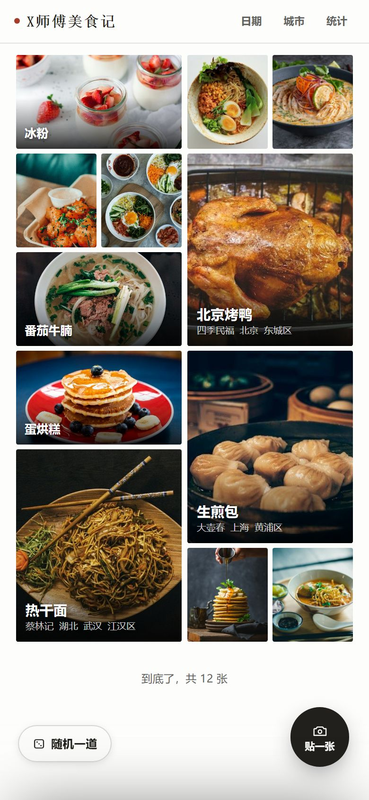
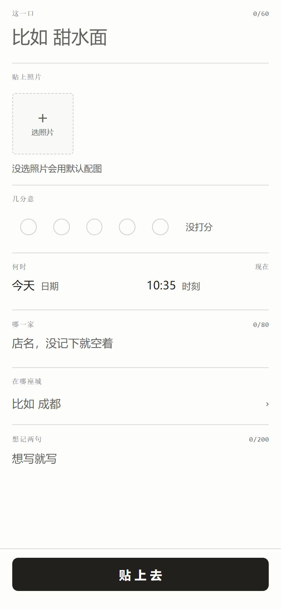

01 / 这面墙
一屏就是一整面墙。
按照片排，不按列表。日期、城市、统计都在原地展开，不跳页。

-
01
「日期」一点，墙就按月分段
十月 2026 有 5 张，九月 2026 有 4 张，每段自带小标题；右侧月份轴可以直接跳到更早的月份。
-
02
「城市」先选省，再选市
每个城市后面标着条数。没写城市的记录归在「未记」里。
-
03
统计是六行字，不是一张图表
拍过的、五分、去过、吃过、均分、反复吃。六行数字从底部升起，看完收起。
-
04
一条记录最多五张照片
墙上每次随机挑一张当主图。翻到底会显示总数。
02 / 怎么记
记一顿饭，只要一句。
-
01
只有「这一口」必填
菜名空着会提示。店名、城市、分数、备注都能空着，一个人在家煮的面也照样记。
-
02
照片至多五张，不选也行
不选照片就用默认配图，墙上每次随机挑一张当主图。
-
03
几分意，一颗一颗点
五颗圈，一到五分；再点同一颗可以取消。不评也不影响平均分。
-
04
哪一家、在哪座城
店名手写，城市按省、市两级选，没记就空着。同一家店吃过的几次会归到这家店下。

03 / 一道菜
点进去，是这一道菜。
甜水面
面条筋道，甜辣刚好。
辣子是现舂的，香得不像话。
-
01
照片按原比例显示
深色底，竖图横图都完整显示，不为排整齐裁边。
-
02
删错了，五秒内能撤销
删除后底部出现撤销条，五秒内可以恢复。
-
03
单独分享这一道菜
分享这条记录的卡片给微信好友，也可以分享整面墙。
04 / 不知道吃什么
翻出来一张，就是它了。
从吃过的里面随机抽一道，不满意就换一道。
05 / 这些记录归谁
这些记录，只属于你。
没有公开广场，也没有排行榜。记录按账号分开保存，别人看不到你的。
不是本地相册
记录和照片保存在服务器上，清理微信缓存也不会丢。
换手机不丢
用同一个微信号登录，记录原样回来。
小屏和大屏
小程序随手记，网页版看得更舒展，数据是同一份。
06 / 常见问题
还有几个小问题。
在哪里打开？要下载吗？
不用下载。微信里搜一搜「X师傅美食记」，或者用手机浏览器打开网页版，同一个账号看到的是同一面墙。
会不会有人看到我吃的东西？
不会。记录按账号隔离，默认只有你自己看得见；想给朋友看的那一条，你可以主动分享出去。
没写店名、没写城市的记录能存吗？
能。只有菜名必填，店名、城市、分数、备注都可以空着，空着记为「未记」。
能记几百顿吗？翻到后面会不会很慢？
能。照片分批加载，翻到很后面也不卡；统计按全部记录计算。
照片会被裁掉吗？
墙上为了排整齐会裁；点开详情页按原比例完整显示。
这个项目是开源的？
是。前端、后端和接口文档在同一个仓库，Apache-2.0 协议。